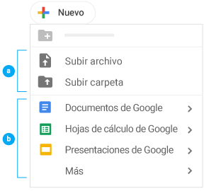
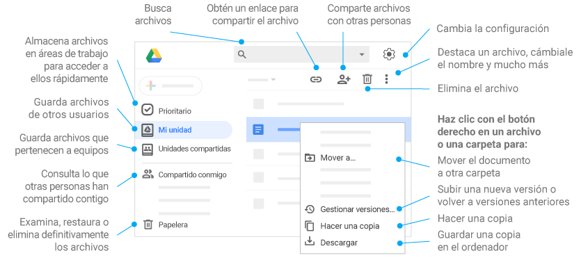
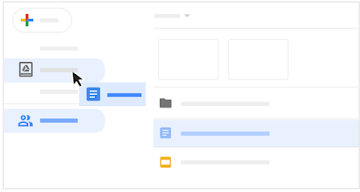
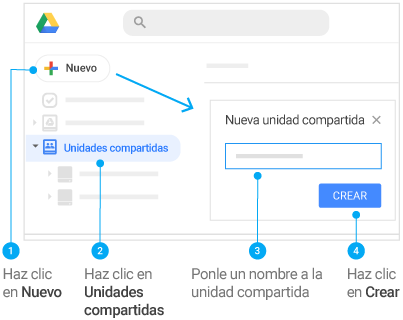
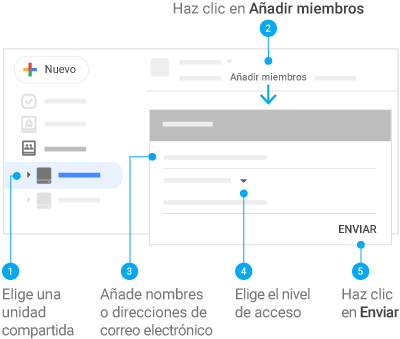
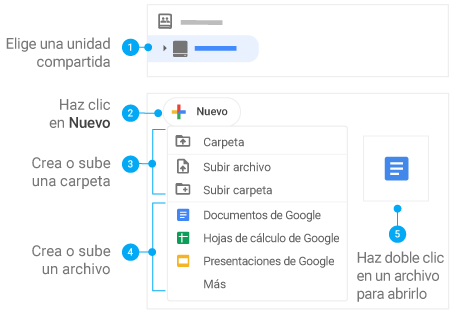
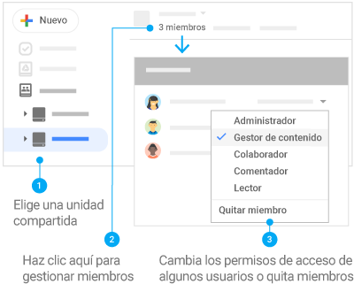

1. Haz clic en  Nuevo para:
Nuevo para:
Subir archivos (por ejemplo, de Microsoft® Outlook®, de Adobe® PDF o de vídeo) o carpetas desde tu ordenador.
Crear documentos directamente desde el navegador.

Editor | Descripción | Ejemplos de uso |
Documentos de Google | Documentos de texto | Propuestas, informes, notas de reuniones compartidas |
Hojas de cálculo de Google | Hojas de cálculo | Planes de proyecto, hojas de presupuesto |
Presentaciones de Google | Presentaciones | Propuestas empresariales, módulos de formación y presentaciones de equipo |
Formularios de Google | Encuestas | Encuestas de satisfacción de los clientes, encuestas de grupo |
Dibujos de Google | Formas, gráficos y diagramas | Diagramas de flujo, gráficos organizativos, esquemas de sitios web, mapas mentales |
Google Sites | Sitios web | Sitios web de equipos, de proyectos, de currículos |

Mediante la opción Compartir y, a continuación, elige qué pueden hacer los colaboradores, que también recibirán una notificación por correo electrónico.
Eliminar archivos y carpetas | Añadir y eliminar archivos y carpetas | Compartir o dejar de compartir archivos y carpetas | Editar archivos | Comentar o sugerir cambios en archivos | Ver archivos y carpetas | |
Propietario | ✔ | ✔ | ✔ | ✔ | ✔ | ✔ |
Editor | ✔ | ✔ | ✔ | ✔ | ✔ | ✔ |
Comentador | ✔ | ✔ | ||||
Lector | ✔ |
Nota: Si mueves un archivo compartido a Mi unidad, la ubicación del archivo solo cambia en tu vista, no en las vistas de los demás usuarios.

Crear unidades compartidas.

Añadir miembros a unidades compartidas.

Añadir archivos o carpetas a unidades compartidas.

Cambiar los niveles de acceso de los miembros.

Solo en la versión web Si vas a compartir un archivo de Google Drive de tu propiedad que tiene contenido sensible, puedes impedir que otras personas lo compartan, descarguen, impriman o copien, o cambien los permisos de acceso. Para restringir el uso compartido de las unidades compartidas, consulta cómo empezar a utilizar este tipo de unidades. |
Si compartes un archivo, el propietario o cualquier persona con permisos de edición podrán cambiar las opciones para compartirlo. Si no quieres que nadie más que tú pueda compartir archivos:
- Abre la pantalla de inicio de Google Drive, Documentos, Hojas de cálculo o Presentaciones de Google.
- Haz clic en Compartir o en el icono Compartir
 .
. - En la parte superior, haz clic en Configuración .
- Desmarca la opción Los editores pueden cambiar permisos y compartir.
- Haz clic en Listo.
Importante: Cuando impides que se comparta una carpeta, la restricción solo se aplica a esa carpeta. Si quieres que los archivos que contiene tampoco se compartan, debes cambiar la configuración de cada uno de ellos.
Si un usuario con acceso de Editor intenta volver a compartir un archivo o una carpeta restringidos, tendrá la opción de enviarte un correo electrónico para solicitar tu permiso. Puedes aceptar o rechazar su solicitud. Aunque decidas autorizarlo, el usuario no podrá cambiar los permisos de acceso. Estos permisos aparecerán atenuados y no estarán disponibles.
- Compartir un archivo con otras personas.
- Añadir o eliminar usuarios específicos del archivo.
- Copiar, imprimir o descargar el archivo.
- Abre la pantalla de inicio de Google Drive, Documentos, Hojas de cálculo o Presentaciones de Google.
- Selecciona uno o más archivos cuyos permisos quieras limitar.
- Haz clic en Compartir o en el icono Compartir .
- En la parte superior, haz clic en Configuración .
- Desmarca la opción Los lectores y comentadores pueden ver la opción para descargar, imprimir y copiar.
- Haz clic en Guardar Listo.
Importante: Puedes restringir cómo comparten, imprimen, descargan o copian contenido los usuarios en Google Drive, Documentos, Hojas de cálculo y Presentaciones de Google, pero no puedes impedir que compartan el contenido de un archivo de alguna otra forma.

Algunas personas prefieren los archivos de Adobe® PDF porque les resulta más fácil imprimirlos, descargarlos y abrirlos con los programas que ya tienen instalados. Si estás trabajando en Documentos u Hojas de cálculo de Google, no necesitarás convertir los archivos en documentos PDF cuando quieras compartirlos. En su lugar, envía un enlace a una versión PDF de tu archivo. Ventajas
|
- En Google Drive, selecciona tu documento.
- Haz clic en Compartir .
- Introduce los nombres o las direcciones de correo electrónico de las personas con las que quieres compartir el documento o la hoja de cálculo.
- Elige el nivel de permiso que les quieres asignar (editar, comentar, ver).
- Haz clic en Enviar.
- En Drive, selecciona tu documento.
- Haz clic en Compartir .
- Haz clic en Copiar enlace y haz clic en Listo.
- Una vez que pegues el enlace, cambia la última parte de la URL antes de enviarlo. Por ejemplo:
- Antes: http://docs.google.com/document/d/12345678/edit?usp=sharing
- Después: http://docs.google.com/document/d/12345678/export?format=pdf
- Envía el enlace al PDF que has modificado.
Cuando tú u otra persona hagáis clic en el enlace, podréis descargar una versión PDF del documento.
Añadir archivos de Office a Drive.
Guardar archivos de Office y acceder a ellos desde Drive.
- Abre Drive.
- Haz clic en Nuevo Subir archivo.
- Elige el archivo de Office que quieras subir.
Abrir archivos de Office en Drive
Si compartes archivos de Office con usuarios que solo tienen este paquete de servicios, puedes trabajar en ellos en Documentos, Hojas de cálculo y Presentaciones, pero guardarlos como archivos de Microsoft en Drive.
Solo en el navegador Chrome
- Asegúrate de que la extensión Edición de Office para Documentos, Hojas de cálculo y Presentaciones no esté instalada:
- Abre el navegador Chrome y, en la esquina superior derecha, haz clic en Más Más herramientas Extensiones.
- Si aparece la extensión Edición de Office para Documentos, Hojas de cálculo y Presentaciones, haz clic en Quitar.
- En Drive, haz doble clic en un archivo de Office.
Ahora puedes editar o compartir archivos, ver su historial de versiones, colaborar en él con otros usuarios en tiempo real y mucho más. Todos los cambios que hagas se guardarán en el archivo original de Office.
Convertir archivos de Office en archivos de Google
Si tú y tus compañeros solo trabajáis en Documentos, Hojas de cálculo y Presentaciones de Google, podéis convertir los documentos de Office y los archivos PDF en documentos, hojas de cálculo o presentaciones de Google.
- Abre Drive y haz doble clic en un archivo de Office.
- Haz clic en Archivo Guardar como documento/hoja de cálculo/presentación de Google.
Para convertir automáticamente todos los archivos de Office que subas en el futuro en documentos, hojas de cálculo o presentaciones de Google:
- En la parte superior de Drive, haz clic en el icono Configuración.
- Junto a Convertir archivos subidos, activa la opción Convertir archivos cargados al formato del editor de Documentos de Google.
Nota: Los archivos que hayas subido anteriormente no se convertirán.
Trabajar en Office y sincronizar los archivos con Drive (se necesita Office)
Cuando añadas tus archivos de Office a Drive, podrás seguir trabajando en ellos en Office y guardar los cambios en Drive.
- Si todavía no lo has hecho, instala File Stream de Drive.
Se añadirá la carpeta de Google Drive al ordenador. - En el ordenador, añade tu archivo de Office a la carpeta de Google Drive.
- En Office, haz clic en Archivo Abrir y busca la carpeta de Google Drive.
- Haz clic en el archivo de Office y, a continuación, en Abrir.
- Edita el archivo.
Todos los cambios que hagas en tu archivo en Office se sincronizarán en Drive.
Inicio
Trabaja con archivos almacenados en Drive.
Comparte archivos y carpetas
Mediante la opción Compartir y, a continuación, elige qué pueden hacer los colaboradores, que también recibirán una notificación por correo electrónico.
Añade archivos compartidos a Mi unidad.
Unidades compartidas (cuenta no institucional)
Restringir las opciones de uso compartido de Drive
Solo en la versión web
Si vas a compartir un archivo de Google Drive de tu propiedad que tiene contenido sensible, puedes impedir que otras personas lo compartan, descarguen, impriman o copien, o cambien los permisos de acceso.
Para restringir el uso compartido de las unidades compartidas, consulta cómo empezar a utilizar este tipo de unidades.
Impedir que los editores vuelvan a compartir el contenido y cambien los permisos de acceso
Si compartes un archivo, el propietario o cualquier persona con permisos de edición podrán cambiar las opciones para compartirlo. Si no quieres que nadie más que tú pueda compartir archivos:
Abre la pantalla de inicio de Google Drive, Documentos, Hojas de cálculo o Presentaciones de Google.
Haz clic en Compartir o en el icono Compartir .
En la parte superior, haz clic en Configuración .
Desmarca la opción Los editores pueden cambiar permisos y compartir.
Haz clic en Listo.
Importante: Cuando impides que se comparta una carpeta, la restricción solo se aplica a esa carpeta. Si quieres que los archivos que contiene tampoco se compartan, debes cambiar la configuración de cada uno de ellos.
Si un usuario con acceso de Editor intenta volver a compartir un archivo o una carpeta restringidos, tendrá la opción de enviarte un correo electrónico para solicitar tu permiso. Puedes aceptar o rechazar su solicitud. Aunque decidas autorizarlo, el usuario no podrá cambiar los permisos de acceso. Estos permisos aparecerán atenuados y no estarán disponibles.
Impedir que los comentadores y lectores descarguen, impriman o copien archivos
Nota: Estas opciones no se pueden restringir en archivos de Google Sites.
Los usuarios con permiso para editar tus archivos compartidos pueden:
Compartir un archivo con otras personas.
Añadir o eliminar usuarios específicos del archivo.
Copiar, imprimir o descargar el archivo.
Importante: No puedes aplicar este ajuste a una carpeta, pero sí a los archivos que contiene.
Para impedir que los lectores y comentadores impriman, copien o descarguen tu archivo:
Abre la pantalla de inicio de Google Drive, Documentos, Hojas de cálculo o Presentaciones de Google.
Selecciona uno o más archivos cuyos permisos quieras limitar.
Haz clic en Compartir o en el icono Compartir .
En la parte superior, haz clic en Configuración .
Desmarca la opción Los lectores y comentadores pueden ver la opción para descargar, imprimir y copiar.
Haz clic en Guardar Listo.
Si un usuario con acceso de Comentador o Lector intenta descargar, imprimir o copiar el archivo compartido, las opciones correspondientes aparecerán atenuadas y no estarán disponibles.
Importante: Puedes restringir cómo comparten, imprimen, descargan o copian contenido los usuarios en Google Drive, Documentos, Hojas de cálculo y Presentaciones de Google, pero no puedes impedir que compartan el contenido de un archivo de alguna otra forma.
Compartir enlaces a versiones PDF de tus archivos
Compartir documentos
Copiar, pegar y enviar el enlace a un PDF
Compatibilidad con archivos de Microsoft